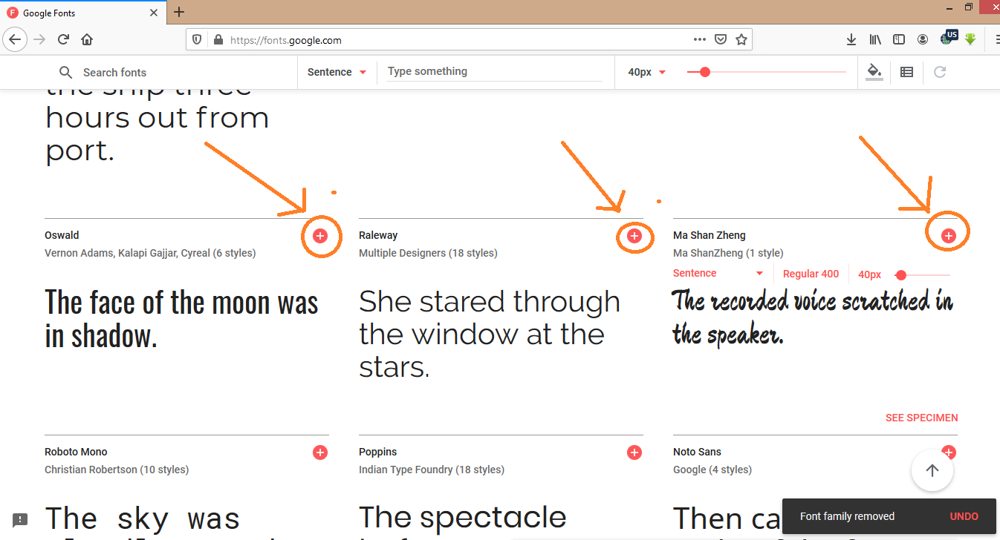
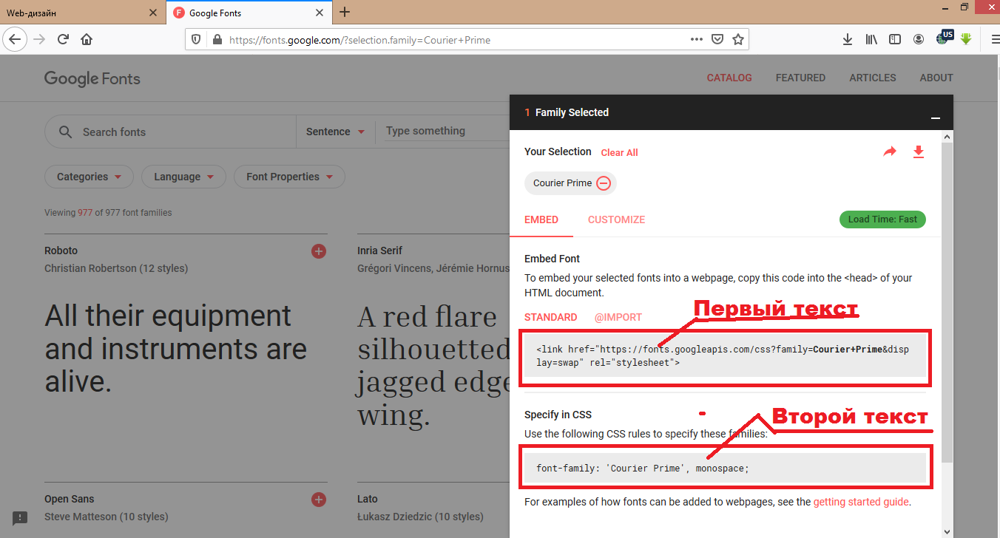
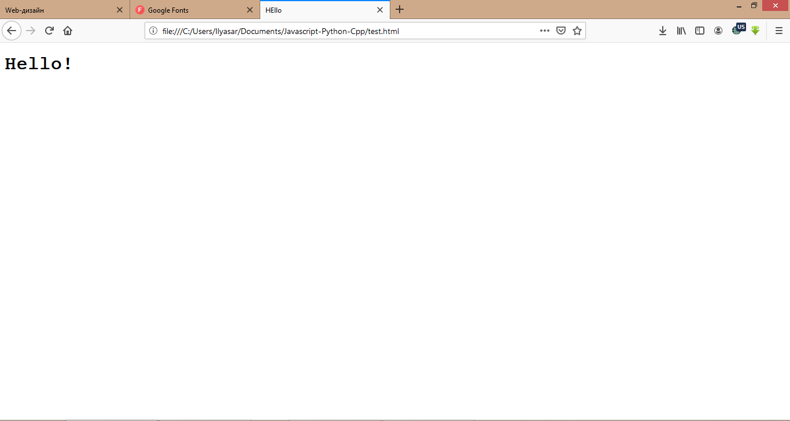

Вот что нам вывела программа после выполнения команды
Web-дизайн - это язык программирования, с помощью которого люди создают знакомые нам сайты. Если бы не они, мы бы сидели без нам любимого Ютуба, не залипали бы в социальных сетях. Первый макет страницы создал Тим Берненрс-Ли.
Сначала откройте блокнот и сохраните файл с расширением .html . Готово!
В документе пишем:
<h1>Hello World!</h1>
Вот что нам вывела программа после выполнения команды
<img src="Полный путь к файлу или только название, если он лежит в той же папке, что и html-документ" width="ширина в пикселях но это необязательно">

Вот что нам вывела программа после выполнения команды
Заходим на сайт fonts.google.com и выбираем понравившийся вам шрифт. Чтобы его выбрать, вам нужно нажать на плюсик в верхнем правом углу.
Вот они, плюсики! Нажмите на него, чтобы выбрать понравившийся вам шрифт
Выбираем один шрифт, затем создаем html документ(как это делать смотрите выше) и css файл делаем также как и в html, только формат css. В нем пишем:
<!DOCTYPE html>
<html>
<head>
<link rel="stylesheet" href="название css файла.css">
</head>
<body>
<h1>Hello!</h1>
</body>
</html>
Дальше нажимаем на вкладку на сайте fonts.google.com. Она называется 1 family selected и находится в нижнем правом углу. Нажмите на нее.
Первый текст копируем в тег head, а в файле css пишем:
h1{
}
Второй текст вставляем в css
Смотрите, какой красивый шрифт я подключил!